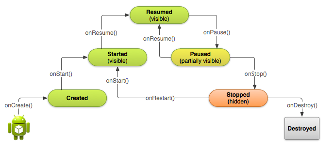
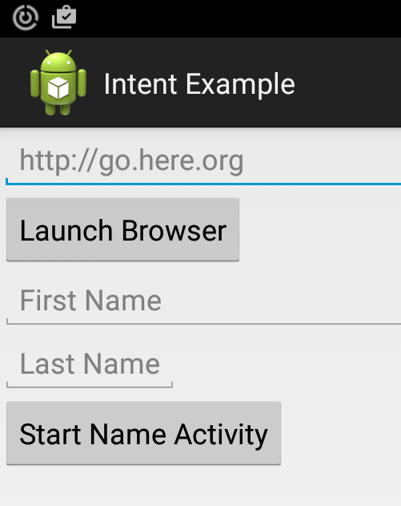
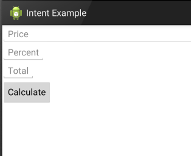

COMP 2601 Winter 2016
Ex 02 Activity Lifecyle
© L.D. Nel 2016
Revisions -none yet
Description:
The purpose of this exercise is to review the Activity lifecycle, explicit intents, and passing data to an activity being launched and getting a result back from the launched activity when it finishes.
You need to demonstrate your exercise to the TA or Prof. before you leave the class to get credit for it. Marks: 2 or completion, 1 for partial progress, 0 for no show or no progress. (A mark of 1 can be upgraded to 2 is show us your completed work within one week of this exercise.)
Instructions:
Background:
Acitivties in android go through a lifecycle as a result of having lifecyle methods invoked on them by the android operating system. Methods such as onCreate(), onPause(), onResume() etc. The lifecycle of Activity instances is described here and a picture of the life cycle is as follows:

In addition a Bundle savedInstanceState often accompanies these methods which allows the activities to save their state when being paused, or stopped, and recover their state when being resumed. Bundles are also used to pass data to a new activity by adding bundle data to the Intent used to start the activity.
Demo Code
Open and run the project in the demo_code folder. It is essentially our "hello world" project with minor modifications. It should open an app that lets you visit a web page using an implicit intent-based activity and should allow you to enter a name pass it on to another explicit intent-based activity: NameActivity. The app screen should look as follows.

Problem 1)
Run the code and perform the following experiment: Type a first name and last name into the First Name and Last Name text fields and press the "Start Name Activity" button letting the NameActivity start up. Then rotate the device to landscape, then back to portrait and finally hit the back button to return to the main activity. Now observe the output printed to the logcat window. It should look something like the following (with some other non-related output removed):
I/MainActivity @1163362: OnCreate() I/MainActivity @1163362: OnCreate: no savedInstanceState I/MainActivity @1163362: OnStart() I/MainActivity @1163362: OnResume() I/MainActivity @1163362: OnPause() I/NameActivity@ 268922307: OnCreate() I/NameActivity@ 268922307: OnCreate: Creation of new instance (no savedInstanceState) I/NameActivity@ 268922307: OnStart() I/NameActivity@ 268922307: OnResume() I/MainActivity @1163362: onSaveInstanceState() I/MainActivity @1163362: onStop() I/NameActivity@ 268922307: OnPause() I/NameActivity@ 268922307: onSaveInstanceState() I/NameActivity@ 268922307: onStop() I/NameActivity@ 268922307: onDestroy() I/NameActivity@ 193349380: OnCreate() I/NameActivity@ 193349380: OnCreate: Recovering previously saved state information I/NameActivity@ 193349380: OnStart() I/NameActivity@ 193349380: onRestoreInstanceState() I/NameActivity@ 193349380: OnResume() I/NameActivity@ 193349380: OnPause() I/NameActivity@ 193349380: onSaveInstanceState() I/NameActivity@ 193349380: onStop() I/NameActivity@ 193349380: onDestroy() I/NameActivity@ 332739591: OnCreate() I/NameActivity@ 332739591: OnCreate: Recovering previously saved state information I/NameActivity@ 332739591: OnStart() I/NameActivity@ 332739591: onRestoreInstanceState() I/NameActivity@ 332739591: OnResume() I/NameActivity@ 332739591: OnPause() I/MainActivity @1163362: OnRestart() I/MainActivity @1163362: OnStart() I/MainActivity @1163362: OnResume() I/NameActivity@ 332739591: onStop() I/NameActivity@ 332739591: onDestroy()
Explain, or be prepared to explain, this output based on your knowledge of the activity life cycle to the marking TA or Prof. That is, relate each line of output to what is happening to the various activities.
Problem 2)
Explict Intents
Study the demo code then do the following:
1) Create a new activity called TipCalcActivity that is intended to represent a tip calculator.
It should have a layout that looks like the following.

The intention of this activity is that you enter a price (e.g 100) and a tip percentage (e.g 15) and when the "Calculate" button is pressed the "Total" TextEdit field will have the total = price * (1 + tipPercentage) entered (e.g. 115)
2) Modify the layout of the main activity so as to have an additional text field for the price and a "Start Tip Calculator" button. It should look like the following:
Add code necessary so that when the "Start Tip Calculator" button is pressed the TipCalcActivity will be started passing the price from the main activity to the tip calculator activity similar to how the name activity works. The code for the button handler would look something like the following (shown along with the nameActivity's button handler for comparison):
final Button nameActivity = (Button) findViewById(R.id.nameActivity);
nameActivity.setOnClickListener(new View.OnClickListener() {
@Override
public void onClick(View v) {
userFirstName = firstName.getText().toString();
userLastName = lastName.getText().toString();
Intent nameIntent = new Intent(MainActivity.this, NameActivity.class);
//or you can use intent.putExtra or parcelable
Bundle nameInfoBundle = new Bundle();
nameInfoBundle.putString(States.STATE_FIRSTNAME, userFirstName);
nameInfoBundle.putString(States.STATE_LASTNAME, userLastName);
nameIntent.putExtra(States.STATE_BUNDLE, nameInfoBundle);
startActivity(nameIntent);
}
});
final Button calculateTipButton = (Button) findViewById(R.id.launchCalculatorButton);
calculateTipButton.setOnClickListener(new View.OnClickListener() {
@Override
public void onClick(View v) {
double price;
try {
price = Double.parseDouble(priceText.getText().toString().trim());
}
catch(NumberFormatException e){
price = 0;
}
Intent calcIntent = new Intent(MainActivity.this, TipCalcActivity.class);
Bundle amountsBundle = new Bundle();
amountsBundle.putDouble(States.STATE_PRICE, price);
calcIntent.putExtra(States.STATE_BUNDLE, amountsBundle);
startActivity(calcIntent);
}
});
When you have completed this you should be able to invoke the new activity from the main activity and compute the total based on a tip percentage using the tip calculator. The result could look like this:

Now notice when you go back to the main activity (by hitting the back button, for example) You should see the original price still in the main activity:

Problem 3)
Finally, what we really want is that when you have calculated the tip and you return to the main activity the new total will be passed back to the main activity and appear as the new price.
The mechanics of this works as follows (and also explained here).
Instead of starting an activity like:
startActivity(calcIntent);
you will define a unique activity identifier for the tip calculation activity (the actual numeric value is not important). The code just allows you to later identify the activity that is sending back a result.
private static final int TIP_CALC_ACTIVITY_CODE = 1;
and then start the activity as follows:
startActivityForResult(calcIntent, TIP_CALC_ACTIVITY_CODE);
In other words, we are starting an activity expecting that it will produce a result.
Now in your TipCalcActivity code where you calculate the total (in response to the "Calculate" button) you need to set the result in a bundle, in an intent, as follows:
Intent resultIntent = new Intent();
Bundle resultBundle = new Bundle(); resultBundle.putDouble(States.STATE_TOTAL, total); resultIntent.putExtra(States.STATE_BUNDLE, resultBundle); setResult(RESULT_OK, resultIntent);
Finally back in the main activity you need to overide the onActivityResult(...) callback method to "catch" the result:
[Aside: what is the significance of having, or not having, the @Override annotation?]
@Override
protected void onActivityResult(int requestCode, int resultCode, Intent resultData){
Log.i(TAG, getString(R.string.onActivityResult));
if(requestCode == TIP_CALC_ACTIVITY_CODE){
if(resultCode == RESULT_OK){
Bundle resultBundle = resultData.getBundleExtra(States.STATE_BUNDLE);
double newTotal = resultBundle.getDouble(States.STATE_TOTAL, 0);
priceText.setText("" + newTotal);
}
}
}
When you have completed this you should be able to calculate a tip and when you press the back button your total will be the new value shown on the main activities price text field.
Problem 4)
Finally, can you make it so that when you click the "Calculate" button in the tip calculator you go back to the main activity right away (that is, you don't have to press the back button).
When you have completed these problems demonstrate your code to the TA or Prof. to get credit for the tutorial.